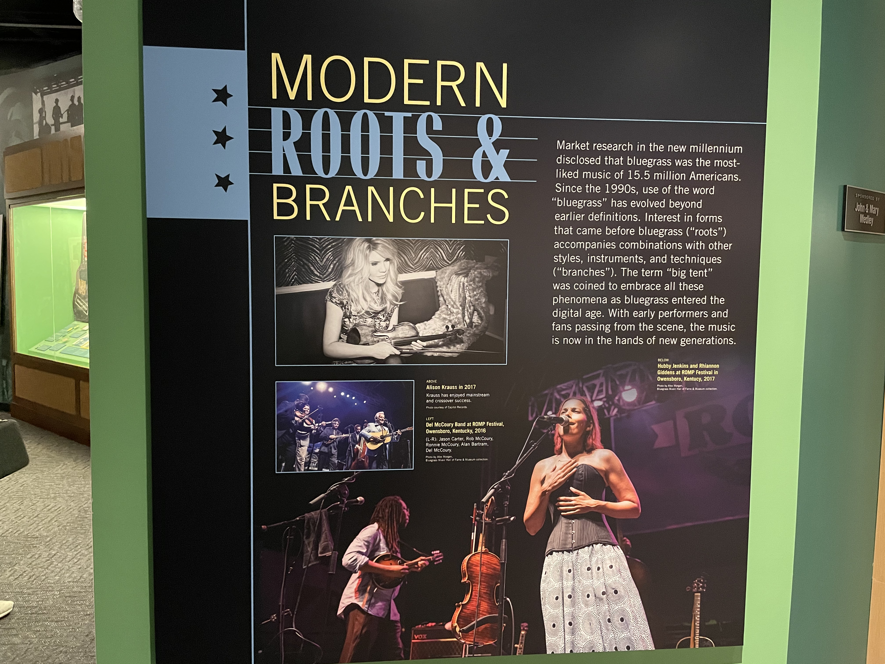
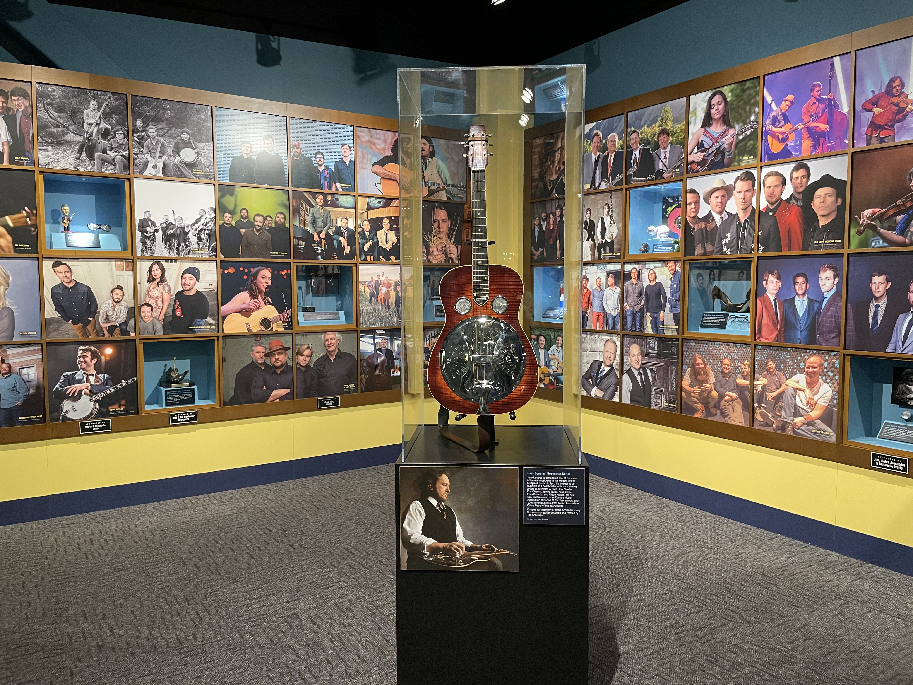
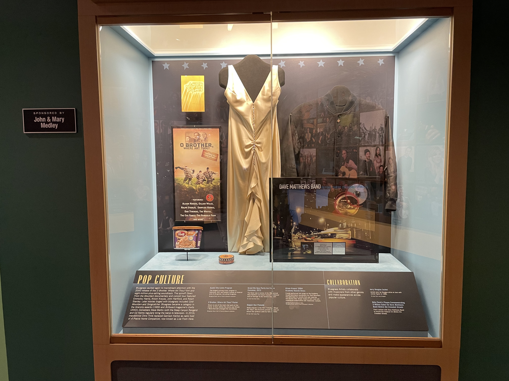

How it Looks Today
Market research in the new millennium disclosed that bluegrass was the most-liked music of 15.5 million Americans. Since the 1990s, use of the word "bluegrass" has evolved beyond earlier definitions. Interest in forms that came before bluegrass ("roots") accompanies combinations with other styles, instruments, and techniques ("branches"). The term "big tent" was coined to embrace all these phenomena as bluegrass entered the digital age. With early performers and fans passing from the scene, the music is now in the hands of new generations.
Jerry Douglas is considered one of the most influential musicians in the modern era of bluegrass music. In fact, his impact is far reaching as a collaborator with such diverse artists as Mumford & Sons, Ray Charles, Eric Clapton, James Taylor, Paul Simon, Elvis Costello, and Alison Krauss. He has won 14 Grammys, three Country Music Association Musician of the Year awards, and 10 International Bluegrass Music Association Dobro Player of the Year awards. Douglas earned many of these accolades using this resonator guitar designed and created by Tim Scheerhorn.

Bluegrass vaulted again to mainstream attention with the 2000 release of the O Brother, Where Art Thou? film and eight-million-plus-selling soundtrack. The spinoff Down From the Mountain documentary and concert tour featured Emmylou Harris, Alison Krauss, John Hartford, and Ralph Stanley. Later movies tinged with bluegrass included Cold Mountain and Songcatcher. Bluegrass became a category in the Grammy awards (1989) and Billboard magazine's charts (2002). Comedians Steve Martin (with the Steep Canyon Rangers) and Ed Helms regularly bring the banjo to television. In 2016, mandolinist Chris Thile replaced Garrison Keillor as radio host of A Prairie Home Companion, now known as Live From Here.
Alison Krauss, 2004 Academy Awards Dress. Krauss performed two songs on the Academy Award nominated soundtrack for Cold Mountain. She attended the awards that year wearing this Sunny Choi design made of dark ivory silk charmeuse embellished with Swarovski crystals.
Information provided by The Bluegrass Museum and Hall of Fame.